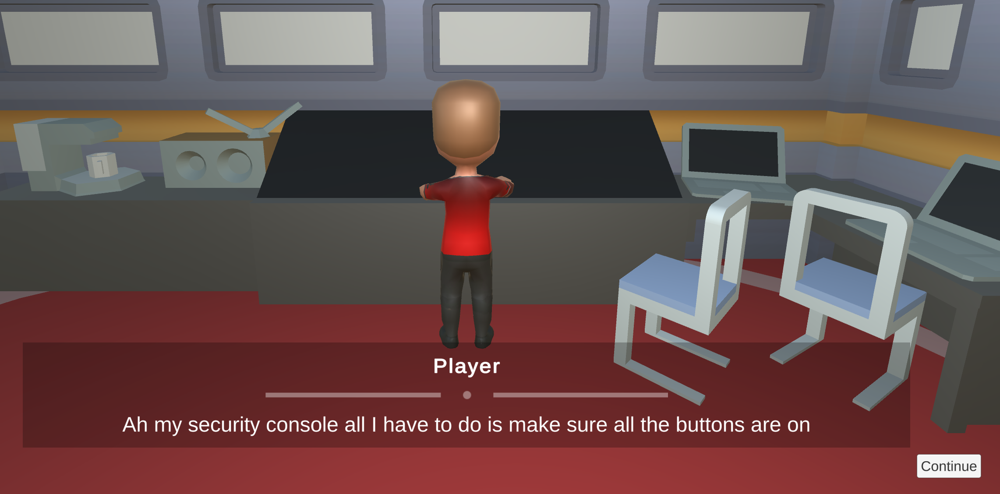
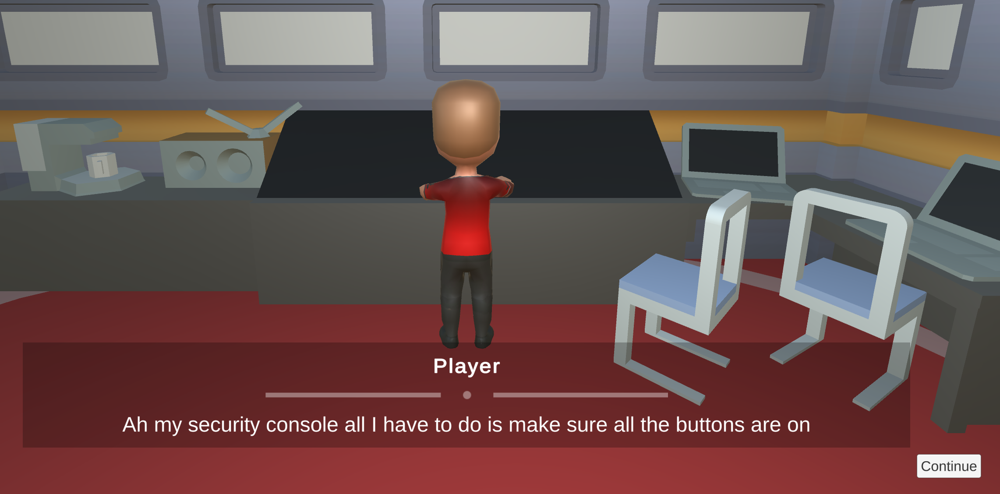

Project Overview
The prototype explores a time-looping Star Trek adventure where narrative branches, following a braided pattern, which diverge but converge at points. Player choices wield influence over future outcomes while maintaining the illusion of choice, by only affecting the future dialog, not the main story parts.
Development Process
I started by thinking about how Telltale Games approach their narrative games. Normally, the player can't actually change the outcome but can make smaller in-story decisions. I don't usually create narrative games, so this type of project was a challenge for me. Everyone else was working with Twine, but I wanted to stick with learning Unity. I looked into creating my own narrative tool but I used a narrative plugins and found Yarn Spinner.
From there, I started to develop a narrative story. I really like Star Trek, so I wanted to create a plotline that could have happened in the show. The general idea was that aliens have boarded the ship. In the first run of the game, most players would try diplomacy. From that, they would be given secret variables that change how the game plays out, but not the ending itself.
Reflection
At first, I tried making a custom dialog system since I want to be a technical designer, but I ran into problems with multiple choices and branching dialog, so I switched to a plugin since time was important for the prototype (Vecchione, 2017). This change gave me more time to test gameplay ideas. Thinking back, changing strategies from making my own narrative system was a good move. It helped me focus less on coding and allowed me to include more environment cues such as lights and sounds, which are there to engross the player in the environment. Since this is a narrative game the gameplay options were limited for me so most of my time was creating environmental cues to make it more thematic in hindsight I could have focused on gameplay and had the player interact with the systems more. Looking ahead to make this game stand out I see a chance to add better and more thematic mini-games into the story, better minigames could enhance player immersion and overall experience, I chose to add minigames into this narrative game to build engagement and immersion having the player perform actions which link into the story. This dive into narrative design is not something I would normally do, and it has given me an appreciation for how large story games work. While it is not something I would like to do this prototype has allowed me to explore an area I wouldn’t have considered. The key things I will take away from this prototype to aid my future design skills are.Key Features
- Character relationship mechanics that influence game outcomes
- Dynamic dialogue options based on previous player choices

Project Overview
This project required me to create a game that had a large scale but was small in scope. I interpreted this as making a game with a small setting that has the potential to feel larger.
Development Process
My setting was a blacksmith who forges swords. The sword's creation is based on mini-games such as forging, quenching, sharpening, and enchanting, which determine its stats and influence a kingdom-level combat system.
During development, I focused on creating engaging mini-games that felt rewarding and intuitive. Each mini-game was designed to represent a specific aspect of the blacksmithing process, ensuring variety and depth. While I initially planned to implement a kingdom combat system where the player could see the sword they made being used, time constraints led me to create a simplified sword vs. sword display.
I think this project had goods bones to be taken foward and developed into a playable game, I was inspired by flash games like JackSmith along with having some practical experience forging myself.
Mini Games
- Forging: Hit the spots when they turn green and before they go away (Reaction)
- Quenching: Make sure the sword enters the bucket perfectly stright to avoid warping (Reaction)
- Sharpening: Make sure the sword stays in the green zone (Reaction)
- Enchanting: Enchant the sword by figuring out a lights on puzzle (Logic Based)
Key Features
- Multi mini-games
- Influences something larger than the blacksmith itself

Project Overview
I had to create a game based on the theme of metaphor. I decided to take that quite literally and use the metaphor of "standing on the shoulders of giants."
Development Process
I initially struggled to come up with a solid idea for this project. I experimented with a penguin puzzle game, then moved on to creating a physics-based game, but nothing seemed to click.
Eventually, I had a breakthrough: I decided to use the player's previous platform runs as a progression mechanic. This concept gave the platformer a unique twist and a sense of purpose. I themed the game around a hellish landscape, which added a fitting atmosphere to the mechanics.
Reflection
As a designer I had to work on how the tension between the player and the game felt, I implemented a timer which added tension to the game (Palmer, 2023), this worked well but I had to deal with player skill and making sure a large audience could finish the game, I did this by getting play testers to play and adding extra time if they failed (Baker, 2022).
Another thing I had to work carefully on was the placement of obstacles and the progression of the levels. The level either introduced a new mechanic or worked on developing the player's skill with that mechanic.
I've learned that simplicity is key. The prioritization of movement over artistic polish meant that the game lacked visuals, yet it provided an avenue for me to experiment with gameplay interactions. I spent a little time making a sqaush and stretch system while offering little gameplay value it was a way to give impact and improve the flow of the game (Aminian, 2023).